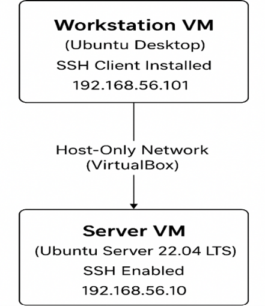
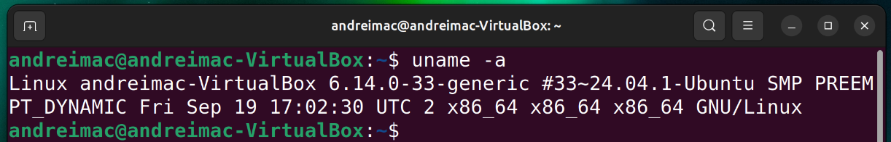
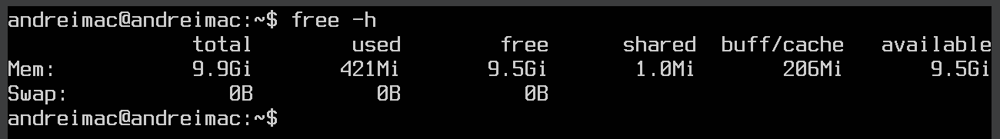
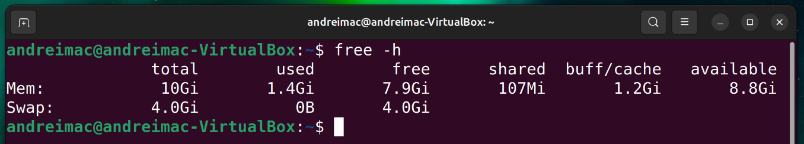
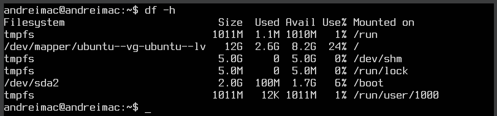
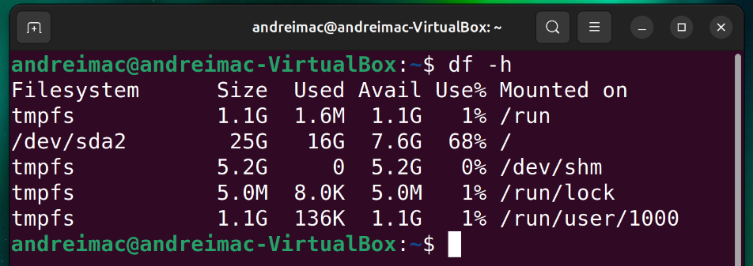
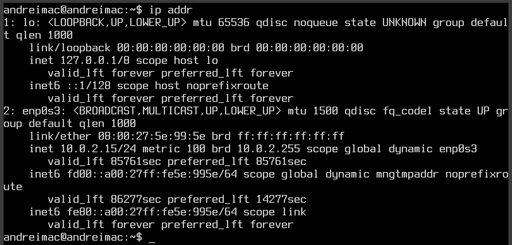
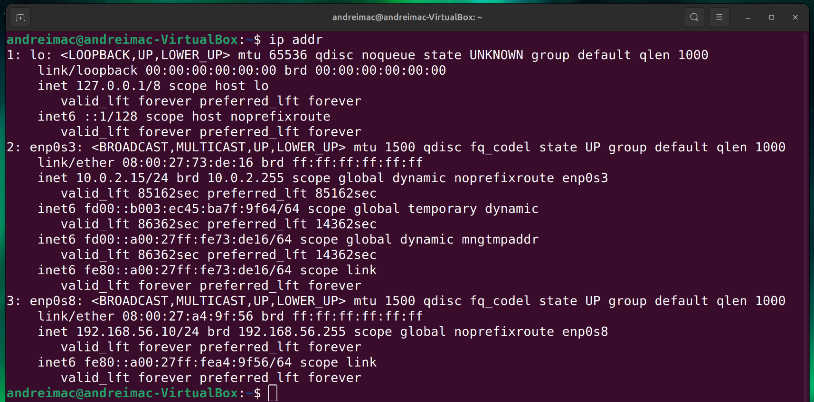
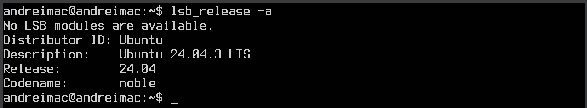
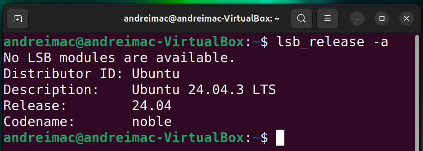

Week 1 — Workstation Configuration & Ubuntu Server (Headless)
Documented decisions, installation steps, network plan, verification commands and placeholders for terminal screenshots.
Workstation Configuration Decision and Justification
Linux Desktop VM (Ubuntu Desktop 22.04 LTS) running as a separate VirtualBox VM. Rationale: Mirrors professional remote administration workflows by keeping all server management via SSH from a client machine. This ensures command-line proficiency, enables clean separation of concerns, and avoids any temptation to use GUI tools on th server (which must remain headless). Ubuntu Desktop 22.04 LTS is chosen for its stability, extensive documentation, and compatibility with Ubuntu Server 22.04 LTS, ensuring a smooth SSH experience. The dual-VM setup with a host-only network simulates a realistic isolated environment, enhancing security and control.

This diagram shows the dual-VM architecture for the coursework. The Ubuntu Server VM runs headless (no GUI) and will be administered remotely, while the Ubuntu Desktop VM acts as the workstation. Both VMs are connected via a Host-Only Network to enable secure local communication.
System planning and initial setup (Ubuntu Server Only)
Ubuntu Server Installation (Week 1 / Phase 1)- Download ISO:
- Downloaded Ubuntu Server 22.04 LTS ISfrom the official Ubuntu website.
- Create VM in VirtualBox:
- Created a new VM named UbuntuServer.
- Type: Linux -> Version: Ubuntu (64-bit).
- Allocated 10 GB RAM and a 20 GB dynamically allocated virtual hard disk.
- Added an optical drive and mounted the Ubuntu Server ISO.
- Start VM and begin installation:
- Booted the VM from the ISO.
- Selected language and keyboard layout.
- Network configured via DHCP.
- User Setup:
- Created a non-root administrative user with a password.
- SSH Installation:
- Installed OpenSSH server by selecting the “Install OpenSSH server” option during the Ubuntu Server installation process.
- Partitioning:
- Selected “Use entire disk” for simplicity.
- Finish Installation:
- Completed installation, removed the ISO, and rebooted the VM.
- Confirmed login via the CLI prompt:
-
username@ubuntu-server:~$
- Console Font Adjustment (Optional):
- Configured UTF-8 and Terminus Bold font with a large size to make the console readable.
- Verification:
- Verified SSH server is running:
-
systemctl status ssh
- Server is now ready for administration.
Network Configuration (VirtualBox Settings & IP Addressing)
- Open VirtualBox -> select each VM -> Settings -> Network.
- For Adapter 1, choose “Host-Only Adapter” and ensure both VMs are attached to the same host-only network (e.g., vboxnet0).
- Do not attach the server to NAT/bridged for Week 1; keep it isolated for safe testing.
- • Configure a static IP for the server via Netplan; allow the workstation to receive an address in the same subnet.
| System | Role | Adapter/Interface | IP Address |
|---|---|---|---|
| Ubuntu Desktop (Workstation) | SSH Client | Host-Only (e.g., enp0s8) | 192.168.56.101 |
| Ubuntu Server (Headless) | SSH Target | Host-Only (e.g., enp0s8) | 192.168.56.10 |
ping 192.168.56.10 ssh andreimac@192.168.56.10Expected results: ICMP replies from the server IP and a password or key-based SSH login prompt. Keep the server headless and perform administration strictly over SSH.
CLI System Specifications
Run these commands on BOTH systems (workstation and server) and embed screenshots with the terminal prompt visible (e.g., username@hostname:~$). Place each screenshot beneath its corresponding caption:
- uname -a
- free -h
- df -h
- ip addr
- lsb_release -a

Shows kernel version, architecture, and hostname

Shows kernel version, architecture, and hostname

Displays total, used, and available RAM and swap memory

Displays total, used, and available RAM and swap memory

Shows disk usage for mounted filesystems

Shows disk usage for mounted filesystems

Displays all network interfaces and their IP addresses

Displays all network interfaces and their IP addresses

Confirms Linux distribution name and version

Confirms Linux distribution name and version
Version Consistency Note
This submission standardises on Ubuntu Server 22.04 LTS for the headless server and Ubuntu Desktop 22.04 LTS for the workstation. Ensure that any figures and terminal outputs you embed reflect the same versions throughout.
Reflection (Summary)
In Week 1 I deliberately constrained myself to a headless Ubuntu Server administered exclusively over SSH from a separate Ubuntu Desktop VM, and that choice shaped everything I learned. Removing the crutch of a GUI forced me to slow down, read man pages properly, and reason about what the OS is actually doing—interfaces, services, filesystems, and the shell as my primary instrument. The dual-VM, host-only network wasn’t just “plumbing”; it made me think like an admin who must prove connectivity and isolation, not assume it. Getting IPs pinned down and verifying with ping and ssh taught me that evidence beats intention; if I can’t demonstrate it at the terminal with username@hostname visible, it doesn’t count. I also hit a small but telling inconsistency: my notes drifted between 22.04 and 24.04. Catching and correcting that matters, because accuracy in versioning underpins reproducibility and security guidance later. Choosing Ubuntu Server LTS over Debian or CentOS Stream felt like the right balance for this coursework: stable enough to avoid chasing the distro, modern enough that documentation and packages line up with current practices. More importantly, the exercise reframed “installation” as the beginning of an argument I need to make every week: can I justify my decisions, show the outputs, and link them to OS behaviour? I can now articulate why headless plus SSH advances the module’s learning outcomes—command-line confidence, security awareness from day one, and a habit of testing rather than assuming. Next, I’ll replace password logins with keys and tighten the firewall so the architecture doesn’t just function, it holds up under scrutiny. The foundation is real: I can see the server, I can reach it, and I can prove it.
References
- Canonical Ltd., “OpenSSH server,” Ubuntu Server Documentation. Accessed: Dec. 17, 2025. [Online]. Available: https://documentation.ubuntu.com/server/how-to/security/openssh-server/
- Oracle, “Host-only networking,” Oracle VM VirtualBox User Manual. Accessed: Dec. 17, 2025. [Online]. Available: https://docs.oracle.com/en/virtualization/virtualbox/6.0/user/network_hostonly.html